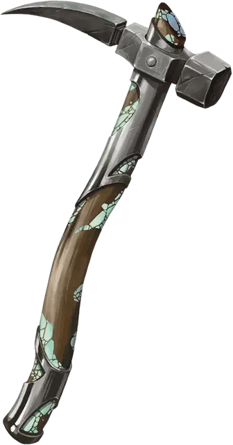

Сияющий клевец
Luminous War Pick
Оружие (боевая кирка), редкое (требуется настройка)

Рекомендованная стоимость 501-5 000 зм
Рукоять этого клевца инкрустирована измельченными перламутровыми камнями, которые придают оружию слабое свечение. Вы получаете бонус +1 к броскам атаки и урона, совершённых с помощью этого клевца.
Удерживая клевец, вы можете бонусным действием наложить заклинание дневной свет [daylight], выбрав точкой на клевце. Использовав это бонусное действие, его нельзя будет использовать снова до следующего рассвета.